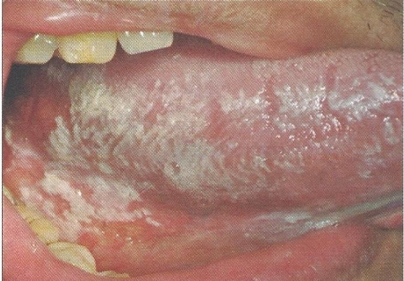

Pseudomembranous candidiasis
เกิดจากการติดเชื้อรา candida ซึ่งมักพบเป็น Candida albicans
ลักษณะทางคลินิก เป็นคราบสีขาวคล้ายนมข้นเกาะติดอยู่บนเยื่อเมือกช่องปาก สามารถเช็ดหลุดออกได้ง่าย
ตำแหน่ง พบได้ที่เยื่อเมือกช่องปากทุกตำแหน่ง
อาการ แสบร้อน การรับรสที่ผิดปกติ รู้สึกมีคราบหนาภายในช่องปาก
ยืนยันด้วยการย้อม (smear) เช่น 10% KOH หรือ gram stain
การรักษา ทานยา
